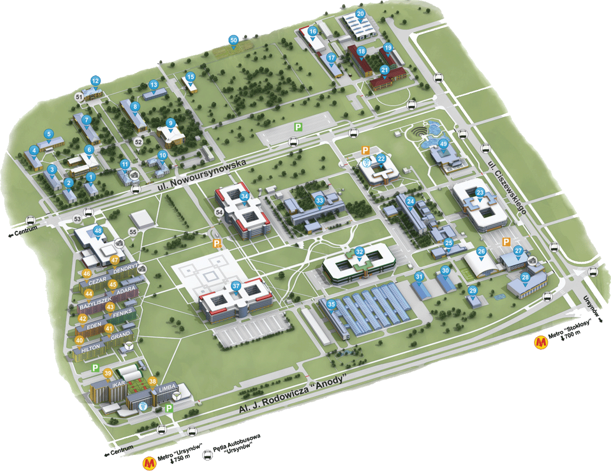

<!-- Image Map Generated by http://www.image-map.net/ -->
<div class="campus container justify-content-center align-items-center mt-5">
  <!-- First row -->
  <div class="row">
  

  <map name="imageMap" id="imageMap">
    <area [routerLink]="['/building/32']" data-translate="Faculty of Human Nutrition and Consumer Science" target="" alt="Wydział Nauk o Żywieniu Człowieka i Konsumpcji" title="Wydział Nauk o Żywieniu Człowieka i Konsumpcji" coords="676,561,700,600,718,607,837,569,843,551,819,516,803,514,742,530,686,546" shape="poly">
    <area [routerLink]="['/building/34']" data-translate="Faculty of Applied Informatics and Mathematics, Faculty of Wood Technology" target="" alt="Wydział Zastosowań Informatyki i Matematyki, Wydział Technologii Drewna" title="Wydział Zastosowań Informatyki i Matematyki, Wydział Technologii Drewna" coords="450,403,514,384,536,419,550,421,558,435,556,444,576,476,578,495,514,513,492,476,475,471,471,455,465,437,453,424" shape="poly">
    <area [routerLink]="['/building/22']" data-translate="Small Animals Clinic" target="" alt="Klinika Małych Zwierząt" title="Klinika Małych Zwierząt" coords="754,353,780,393,793,398,807,395,822,394,832,388,840,384,846,375,847,366,824,330,814,328,799,325,786,328,774,334,762,339" shape="poly">
    <area [routerLink]="['/building/37']" data-translate="Faculty of Horticulture and Landscape Architecture" target="" alt="Wydział Ogrodnictwa i Architektury Krajobrazu" title="Wydział Ogrodnictwa i Architektury Krajobrazu" coords="418,646,442,686,450,690,497,673,506,678,513,679,522,678,531,672,535,664,579,647,578,627,550,587,514,598,500,593,478,600,472,610,461,618,444,622,421,629,419,636" shape="poly">
    <area [routerLink]="['/building/33']" data-translate="Faculty of Civil and Environmental Engineering" target="" alt="Wydział Inżynierii i Kształtowania Środowiska" title="Wydział Inżynierii i Kształtowania Środowiska" coords="592,429,610,456,611,472,621,483,651,498,687,488,693,461,740,449,728,423,717,405,696,401,679,399,650,409,615,422" shape="poly">
    <area [routerLink]="['/building/24']" data-translate="Faculty of Horticulture and Landscape Architecture" target="" alt="Wydział Ogrodnictwa i Architektury Krajobrazu" title="Wydział Ogrodnictwa i Architektury Krajobrazu" coords="675,636,672,651,725,727,743,722,743,709,689,630" shape="poly">
    <area [routerLink]="['/building/35']" data-translate="Faculty of Veterinary Medicine" target="" alt="Wydział Medycyny Weterynaryjnej" title="Wydział Medycyny Weterynaryjnej" coords="808,442,819,465,844,466,875,508,903,505,921,519,975,501,953,474,932,466,900,422,882,415,858,405,829,413" shape="poly">
    <area [routerLink]="['/building/23']" data-translate="Faculty of Veterinary Medicine, Faculty of Animal Science" target="" alt="Wydział Medycyny Weterynaryjnej, Wydział Nauk o Zwierzętach" title="Wydział Medycyny Weterynaryjnej, Wydział Nauk o Zwierzętach" coords="961,390,1005,376,1023,381,1078,462,1075,480,1025,496,1010,492,978,445,953,404" shape="poly">
    <area [routerLink]="['/building/18']" data-translate="Faculty of Production Engineering" target="" alt="Wydział Inżynierii Produkcji" title="Wydział Inżynierii Produkcji"  coords="731,113,733,97,753,93,787,149,789,161,771,167,755,146" shape="poly">
    <area [routerLink]="['/building/21']" data-translate="Faculty of Production Engineering" target="" alt="Wydział Inżynierii Produkcji" title="Wydział Inżynierii Produkcji"  coords="776,172,792,197,836,183,832,174,869,161,854,140,804,157,808,162" shape="poly">
    <area [routerLink]="['/building/17']" data-translate="Faculty of Production Engineering" target="" alt="Wydział Inżynierii Produkcji" title="Wydział Inżynierii Produkcji"  coords="672,120,710,170,732,162,694,112" shape="poly">
    <area [routerLink]="['/building/19']" data-translate="Faculty of Production Engineering" target="" alt="Wydział Inżynierii Produkcji" title="Wydział Inżynierii Produkcji"  coords="790,104,815,90,823,95,833,116,843,134,844,141,819,149" shape="poly">
    <area [routerLink]="['/building/5']" data-translate="Faculty of Economic Sciences" target="" alt="Wydział Ekonomiczno-Rolniczy" title="Wydział Ekonomiczno-Rolniczy" coords="74,301,128,288,142,311,88,326" shape="poly">
    <area [routerLink]="['/building/6']" data-translate="Faculty of Economic Sciences" target="" alt="Wydział Ekonomiczno-Rolniczy" title="Wydział Ekonomiczno-Rolniczy" coords="125,335,195,313,224,357,150,380" shape="poly">
    <area [routerLink]="['/building/7']" data-translate="Faculty of Economic Sciences" target="" alt="Wydział Ekonomiczno-Rolniczy" title="Wydział Ekonomiczno-Rolniczy" coords="140,246,189,232,231,299,182,313,160,278" shape="poly">
  </map>
</div>

  <div class="row">

  </div>

</div>

